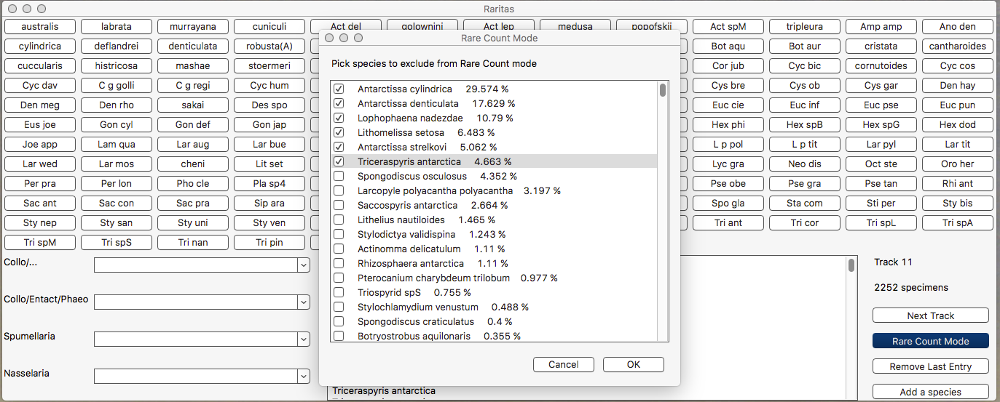

Raritas 0.7

GUI available for Mac (El Capitan and beyond), PC (Windows 7 and 10) and Ubuntu (Xenial). Otherwise, open-source code runs on python with wxpython and matplotlib.This is a counter software allowing the use of a large amount of counting categories and of a "Rare Count Mode" for stratified counting. Output files are 2 tab-separated files: one showing the species vs specimens count, and the second a tally of the specimens counted per species, written following the metadata-rich SOD format (i. e. the input format of NSB database).
Further explanations are given in the article describing it:
Lazarus, D. B., Renaudie, J., Lenz, D., Diver, P., and Klump, J. (2018). Raritas: a program for counting high diversity categorical data with highly unequal abundances. PeerJ, 6:e5453.